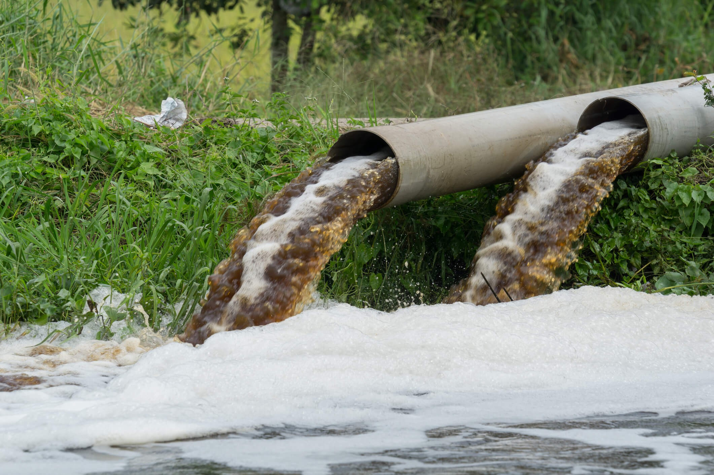

Published on May 10th, 2021
What is a Java Stream?
** NOTE: I am talking about Java 8 Stream API, not java.io
A stream is simply an iteration. Items pass through a stream in hopes of being manipulated in different ways.
What is a visual way to think of a Stream?
Streams were my introduction to functional programming. A very simple concept that took me some time to understand. I often see people confused by streams, and I was too at a point in time. Hopefully this helps you understand streams with ease.
Streams are just pipelines. Let's make it simple.
Streams really don't have to be hard. I like to think of streams like a pipeline, all the items in the stream loop through this pipe until a terminal operator is called. Another way of thinking of this terminal operator is the exit of pipe contents into a body of water.